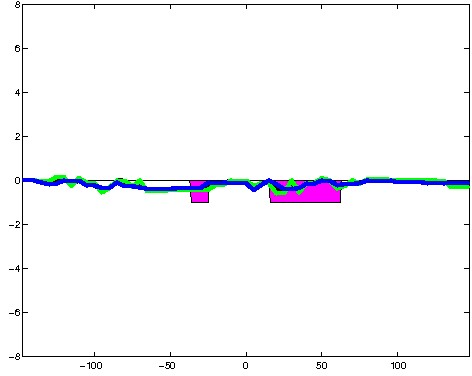
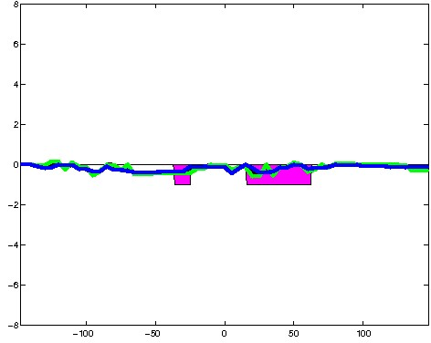
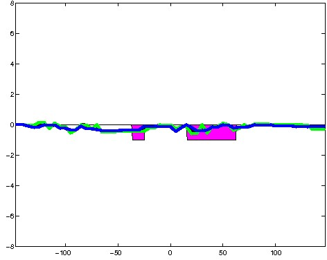

K562 Neither DNase matched - State 13:Ctcf (n=75)
K562 Neither DNase matched - State 13:Ctcf (n=75)
[
See group descriptions
]

; picked in K562 (state 13:Ctcf, DNase); matched; chr6:51,618,509-51,618,803 (295bp)")
; picked in K562 (state 13:Ctcf, DNase); matched; chr14:58,967,969-58,968,263 (295bp)")
; picked in K562 (state 13:Ctcf, DNase); matched; chr6:111,271,129-111,271,423 (295bp)")
; picked in K562 (state 13:Ctcf, DNase); matched; chr19:11,397,249-11,397,543 (295bp)")
; picked in K562 (state 13:Ctcf, DNase); matched; chr2:84,195,029-84,195,323 (295bp)")
; picked in K562 (state 13:Ctcf, DNase); matched; chr9:26,613,809-26,614,103 (295bp)")
; picked in K562 (state 13:Ctcf, DNase); matched; chr12:6,172,329-6,172,623 (295bp)")
; picked in K562 (state 13:Ctcf, DNase); matched; chr3:127,852,489-127,852,783 (295bp)")
; picked in K562 (state 13:Ctcf, DNase); matched; chr10:120,560,449-120,560,743 (295bp)")
; picked in K562 (state 13:Ctcf, DNase); matched; chr18:46,941,729-46,942,023 (295bp)")
; picked in K562 (state 13:Ctcf, DNase); matched; chr4:156,275,129-156,275,423 (295bp)")
; picked in K562 (state 13:Ctcf, DNase); matched; chr12:20,799,289-20,799,583 (295bp)")
; picked in K562 (state 13:Ctcf, DNase); matched; chr9:35,275,069-35,275,363 (295bp)")
; picked in K562 (state 13:Ctcf, DNase); matched; chr12:27,577,589-27,577,883 (295bp)")
; picked in K562 (state 13:Ctcf, DNase); matched; chr18:5,073,329-5,073,623 (295bp)") 

; picked in K562 (state 13:Ctcf, DNase); matched; chr9:613,669-613,963 (295bp)")
; picked in K562 (state 13:Ctcf, DNase); matched; chr2:180,942,029-180,942,323 (295bp)")
; picked in K562 (state 13:Ctcf, DNase); matched; chr2:232,382,249-232,382,543 (295bp)")
; picked in K562 (state 13:Ctcf, DNase); matched; chr12:43,732,689-43,732,983 (295bp)")
; picked in K562 (state 13:Ctcf, DNase); matched; chr12:10,653,589-10,653,883 (295bp)")
; picked in K562 (state 13:Ctcf, DNase); matched; chr12:96,213,849-96,214,143 (295bp)")
; picked in K562 (state 13:Ctcf, DNase); matched; chr3:114,137,529-114,137,823 (295bp)")
; picked in K562 (state 13:Ctcf, DNase); matched; chr5:60,006,229-60,006,523 (295bp)")
; picked in K562 (state 13:Ctcf, DNase); matched; chr18:54,456,889-54,457,183 (295bp)")
; picked in K562 (state 13:Ctcf, DNase); matched; chr1:213,308,969-213,309,263 (295bp)")
; picked in K562 (state 13:Ctcf, DNase); matched; chr18:30,294,509-30,294,803 (295bp)")
; picked in K562 (state 13:Ctcf, DNase); matched; chr13:96,313,329-96,313,623 (295bp)")
; picked in K562 (state 13:Ctcf, DNase); matched; chr2:136,671,449-136,671,743 (295bp)")
; picked in K562 (state 13:Ctcf, DNase); matched; chr11:3,993,129-3,993,423 (295bp)")
; picked in K562 (state 13:Ctcf, DNase); matched; chr2:189,377,149-189,377,443 (295bp)")
; picked in K562 (state 13:Ctcf, DNase); matched; chrX:154,215,489-154,215,783 (295bp)")
; picked in K562 (state 13:Ctcf, DNase); matched; chr19:51,166,889-51,167,183 (295bp)")
; picked in K562 (state 13:Ctcf, DNase); matched; chr13:78,695,649-78,695,943 (295bp)")
; picked in K562 (state 13:Ctcf, DNase); matched; chr12:58,739,949-58,740,243 (295bp)")
; picked in K562 (state 13:Ctcf, DNase); matched; chr2:65,206,069-65,206,363 (295bp)")
; picked in K562 (state 13:Ctcf, DNase); matched; chr6:136,868,509-136,868,803 (295bp)")
; picked in K562 (state 13:Ctcf, DNase); matched; chr2:112,806,429-112,806,723 (295bp)")
; picked in K562 (state 13:Ctcf, DNase); matched; chr14:24,364,689-24,364,983 (295bp)")
; picked in K562 (state 13:Ctcf, DNase); matched; chr1:195,686,849-195,687,143 (295bp)")
; picked in K562 (state 13:Ctcf, DNase); matched; chrX:7,964,489-7,964,783 (295bp)")
; picked in K562 (state 13:Ctcf, DNase); matched; chr8:73,232,069-73,232,363 (295bp)")